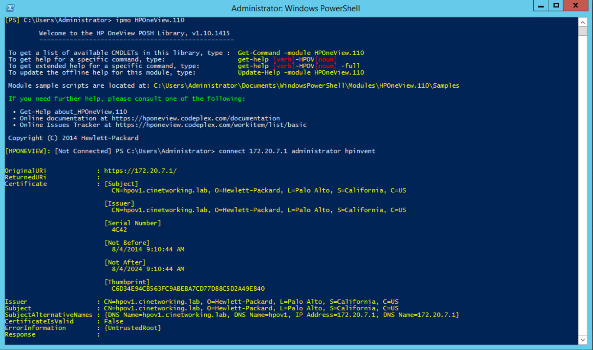

Introduction
This library provides a pure Windows PowerShell interface to the HPE OneView and HPE Synergy Composable API.
HPE OneView is a fresh approach to converged infrastructure management, inspired by the way you expect to work, with a single integrated view of your IT infrastructure.
This PowerShell project is developed for those that want to automate operations or use PowerShell as an interactive CLI for HPE OneView and/or HPE Synergy.
Getting Started
To get started, you can download the latest release in an easy to use, digitally signed installer.
The library (version 3.10 and newer) is also available on the PowerShellGallery:
# Locate the HPE OneView PowerShell library on PowerShellGallery
Find-Module HPOneView.310
Version Name Repository Description
------- ---- ---------- -----------
3.10.14... HPOneView.310 PSGallery HPE OneView PowerShell Library
# Install the HPE OneView PowerShell library
Install-Module HPOneView.310
Lastly, you can clone the source repository:
# Create parent directory where to store repository clone
New-Item -Path $ParentDirectory -Type Directory
cd $ParentDirectory
# Clone POSH-HPOneView repository
git clone https://github.com/HewlettPackard/POSH-HPOneView.git
Online documentation can be found in the Project Wiki.
Project CI Status
| AppVeyor 3.00 Branch | AppVeyor 3.10 (origin/master) Branch |
|---|---|
Authors and Contributors
The following are the primary developers of the HPE OneView PowerShell library.
- Chris Lynch (@ChrisLynchHPE)
- Eric Schulte(@ejschulte)
- Terry Martin(@tmartin103)
Support
Having trouble? Missing a feature? Please use the project Issues Tracker.